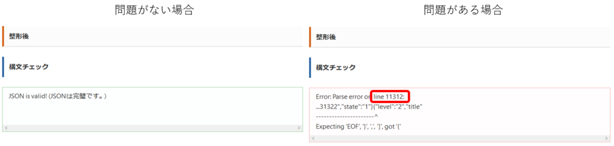
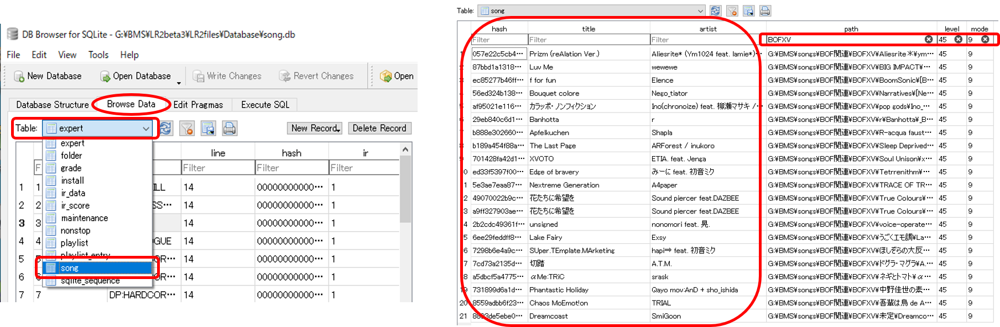
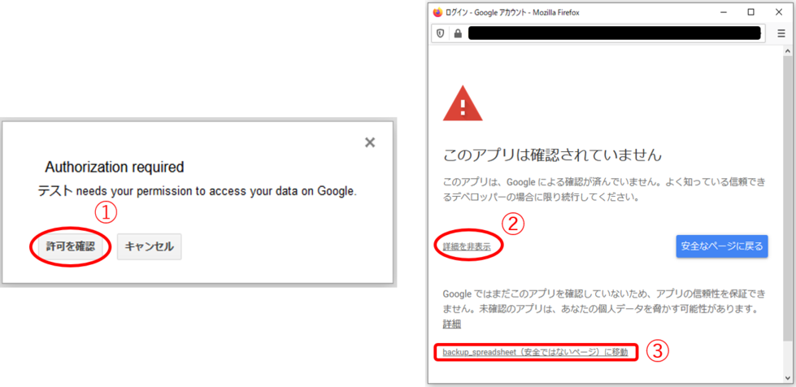
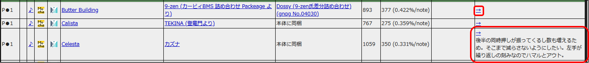

コラム -難易度表の作成方法について に関しての追加記事です。ノウハウの備忘録なので雑多です。加筆修正が入る可能性もありますがご了承ください。
記事中で不具合や質問、要望などありましたら PMS Database に関してのお問い合わせ (Googleフォーム) もしくは ＠pmsdatabase にお寄せください。
(2026/06)
LR2IR の閉鎖に伴い、一部文章の修正を行いました。
また、Q&A のうち「md5 (or LR2IR) / sha256 (or Mocha-Repository) の効率的な取得方法について」を最新の情報に書き換えました。
(2022/04)
昨今の事情を鑑みて sha256 カラムを追加することにしました。それに伴い、〇行目～ ××セル～ の表現も見直されています。
既に導入済の方々にはお手数おかけしますが、最新版のサンプルシートに基づいて表記を読み替えてください。よろしくお願いします。
複数質問を頂きました。「table.html」(HTML) をブラウザプレビュー(ブラウザにD&Dで投入) した段階では難易度表は表示されません。サーバーにアップする必要があります。
難易度表をアップしたにも関わらず表示されない場合は、「score.json」の中身(JSON)、またはHTMLの不備がまず疑われます。
JSON Pretty Linter Ver3 (Webツールです) を開き「整形前」ウィンドウ内にJSONを貼り付けると、エラーチェックを行えます。(下図)
例えば右図では11312行目にエラーがあると示されていますが、これはスプレッドシートの行番号と一致するので すぐに問題箇所を特定することが出来ます。
セルの切り取りに伴う参照エラー(#REF!) ・ セル内改行 ・ 末尾の },→}] 置換忘れ が特によく起こるパターンなのでチェックしてみてください。
また念のため「header.json」の記述にミスがないかも同様に確認してください。いずれも問題無し判定をされた場合は、HTML側の不備を疑いましょう。

難易度表ツールや beatoraja で正常に読み込めるかを試してみてください。
JSONに不備がないにも関わらずツールでの読み込み時にエラーが発生する場合は、HTMLから「header.json」「score.json」へのリンクが上手くいっていない可能性があります。
一方、ツール上では正常に読み込まれるのにブラウザ上では表示できない場合、「style」へのリンクミス、あるいはHTMLの難易度表表示部(22-233行目)に問題があると思われます。
HTMLに問題がある場合はケースバイケースな対応が必要で、筆者も原因がよく分からないことばかりです。ごちゃごちゃしてきたらサンプルセットから該当部を再コピペしてリセットするのが手っ取り早いかも…。
GitHub Pages の初回公開には少し時間がかかります。それでもずっと 404 を返される場合、readme.md を作成すると改善されるかもしれません。
また、GitHub はアンダースコア「_」で始まるファイルやフォルダを公開対象から外す仕様があるようです。もし使用したい場合は、ルートディレクトリに拡張子 .nojekyll の空ファイルを設置してください。(参考資料)
難易度表ツールや beatoraja 上では反映されているでしょうか。反映されていない場合は、送信ミスやサーバーの不具合(稀によくある/報告して解決を待つ) が考えられます。
ブラウザ上でだけ反映されないという場合は キャッシュを読み込んでしまう仕様* によるものです。キャッシュクリア もしくはしばらく放置すれば自然に解決します。
* 例えば発狂PMS難易度表(FC2運営)では $.post メソッド とやらを使用してこの問題を解決しているのですが、忍者ホームページでは難易度表表示に不具合が生じるため諦めている経緯があります。
忍者ホームページ以外のサーバーを利用されている方は、発狂PMS難易度表からソースコード(33-45行目)を参照して書き換えてみると良いかもしれません。(未検証につき自己責任でお願いします。)
筆者がよく使う方法を中心にご紹介します。他にいい方法をご存知の方おられたらシェアお願いします；
■ beatoraja の選曲画面から取得
・ Ctrl + F3：md5 ハッシュ値をクリップボードにコピー
・ Ctrl + Shift + F3 : sha256 ハッシュ値をクリップボードにコピー
■ hash2web を使ってBMSファイルから直接取得
配布所の解説に従って、右クリック → 送る にショートカット登録しておきましょう。
(2026/06) LR2IR と Cinnamon のリンクが機能しなくなりましたので、例えば このように Python スクリプトを改変すると良い感じです。
■ その他レガシーな手法として紹介していたもの
md5 であれば Stairway 氏のツール や BMSHashUtil (misty.ls04 氏) を使う方法が、
sha256 であれば Explzh の右クリック拡張メニュー「SHA256ハッシュ値…」から調べる方法があります。また、LR2と連携する難易度表ツール GLAssist / BeMusicSeeker を導入済であれば、曲検索→IRページを開く をクリックすると 旧LR2IR の末尾が ～bmsmd5={md5} となっているURLにジャンプするので、そこから入手できます。
md5 の他、曲名、レベル、アーティスト名などの曲情報がまとめられた拡張子.dbのファイルが下記ディレクトリにあり、これを DB Browser for SQLite というソフトで開くことで、たくさんの曲情報をcsv形式でまとめて取得することが出来ます。使いこなせば非常に効率的でオススメ。使用前にBMSプレイヤーの楽曲データ読み込みを行っておきましょう。
LR2の場合: LR2beta3 /LR2files /Database /song.db
beatorajaの場合: beatoraja ディレクトリ内の songdata.db
DB Browser for SQLite を開いて DBファイルをD&Dで投入し、左下図のように Browse Data > Table: のプルダウンメニューから"song"を選択します。
読み込み済の曲情報が表形式で表示されるので、必要な情報をコピーしましょう。なお、表カラムの"hash" の値が、当コラムにおける md5 (or LR2IR) に相当しています。
フィルター機能を利用すると効率が上がります。例えば「BOFXVフォルダ内にあるレベル45表記のPMS(9keys)」を難易度表にしたい場合、右下図のように "path" に「BOFXV」"level"に「45」"mode"に「9」を入力し、抽出された譜面リストから"hash" "title" "artist" などをコピーし、スプレッドシートに貼り付ければOKです。
スプレッドシートの md5 (or LR2IR) 欄は、この文字列のみを入力しても、末尾が bmsmd5=...のURL形式で入力しても 同様に動作しますのでご心配なく。

■ 既存のIRページから取得する
Mocha-Repository に登録済の譜面であれば、そのIRページのURLから sha256 を、またヘッダ情報にある LR2IRへのリンク先URLから md5 を引き続き入手できます。
(2026/06 LR2IR 閉鎖以降) LR2IR にしか登録されていない譜面の場合は、代替IRや魚拓サイトから譜面検索を行うことで md5 を入手可能な場合があります。
いくつかのミラーサイトと、確認すべきURLの形式を列挙します：
・LR2IR Archive : 魚拓サイト https://lr2ir.com/charts/{md5} *(2026/06) PDB における LR2IR 代替リンクの暫定接続先サイトです。
・LR2DB : 魚拓サイト https://lr2db.congenial-spirits.com/chart/{md5}
・LR2IRアーカイブ : 魚拓サイト https://stellabms.xyz/lr2ir/md5/{md5} *難易度表でおなじみの Stella のサーバーに保管されています。
・BMS-IR : 魚拓 + LR2IR閉鎖後の新規スコアを蒐集している代替IR候補 より新しい譜面を探す場合はこちら https://bms-ir.org/new/song?songmd5={md5}
■ BMS Search Alternative を利用して取得する
Ribbit氏運営の BMS Search Alternative は bmsid と bmsmd5 の大部分* が紐付けされてあり、曲タイトル欄からLR2IRにジャンプすると、URLから bmsmd5 が取得できます。
他の難易度表に登録されている差分を検索したり 入手先URLを複数リストする等の独自機能があり、手元にBMSが揃っていなくても難易度表向けの情報収集ができる点で重宝します。
* LR2IR登録者が0名だと検索にかかりません。また非常に古い差分等は一部 bmsmd5 の紐付けが出来ていない場合があるようです。
* 筆者は未使用なのですが、このページ (Ribbit氏の GitHub) で LR2IRの生データ+bmsmd5 がまとめられた csvファイルが配布されているようです。まとめて調査したい場合は便利かもしれません。
こちらの方法は非常に強力でしたが、サービスの停止により現在は使えません。
Google Apps Script を利用し、日時を指定して Googleスプレッドシートのバックアップを作成する方法が 様々なページで解説されています。万一の備えにオススメ。
しかもスプレッドシートはどれだけ作成しても Google Drive の容量を消費しない仕様 らしく、基本的に作り得のようです。 (2023/12 頃より) 容量を消費する仕様に変わったのでトリガーの設定にご注意ください。バックアップを定期的に削除する想定で、専用のフォルダを作成しておくと効率的と思われます。
Google Apps Script は、Googleドライブ > 左上の新規ボタン > その他 プルダウンからアクセスできます。
■ Google Apps Scriptでスプレッドシートのバックアップを指定フォルダに定時のタイミングでとる方法 | Arrown
【補足】
Google Apps Script で初めて関数を実行するときに承認を求められる場合があります。その場合は下図のように (1)許可を確認 → (2)詳細を表示 → (3) ページに移動 とクリックし、指示に従ってログインと許可を行ってください。2回目以降はこの操作は必要なくなります。

■ 難易度表にはリストされているのに、カスタムフォルダ内に見つからない譜面がある
md5 (or LR2IR) の入力ミス、あるいは同じ値が重複して入力されていないか確認してみてください。
■ 一部のブラウザやスマホから難易度表を読み込んだ時、表の横幅やレイアウトがおかしくなる
長い文字列などで自動的に改行できないものがあると発生する不具合のようなのですが 詳しくは分かりません。筆者も困っています！
■ その他
簡単な Tips / Q&A は、見つけ次第ここに追記していきます。
配布中のサンプルセットのソースコードを改変する形式での紹介です。〇行目: という場合、オリジナルのサンプル難易度表 のソース上での行番号と読み替えてください。
例えば「レベル表記」であれば、「table.html」の160行目: $("＜td width='6%'＞" + mark + x + "＜/td＞").appendTo(str); の赤字部分の数値を変更します。
「差分」(209 / 211 / 215 / 217行目) など設定箇所が複数にわたっている場合は、念のため全ての数値を変更しておきましょう。
*非常に長い文字列がデータに含まれていると設定が効かなくなることがあります。(上記 その他のQ&A と同じ)
一例として、サンプルセットから「コメント」カラムを削除してみます。実際のサンプルはこちら。
■ 「コメント」カラムを削除した難易度表
■ サンプルセットをダウンロード (この中身を反映すると、手元の難易度表から「コメント」カラムが消えます)
(1)「table.html」を開きます。
(2) 122行目: ＜td align='center'＞コメント＜/td＞ 記述を削除します。 (*この行の記述で難易度表の表示カラムが指定されています)
(3) 129行目: obj_sep.html("＜td colspan='8' align='center'＞" + ...(略) を 7 に変更。 (*この数字は表示するカラムの総数で、今回はコメント列を削除したので -1 します)
(4) 230行目: (3)と同様 ＜td colspan='7'... に変更します。
(5) 220-221行目: //コメント ～ .appendTo(str); までの記述を削除します。222-223行目は表の生成に必要なので、間違えて削除しないように注意。
他のカラムを削除する場合は、基本的に脚注間を全て削除すればOKです。 (*例えば「差分」なら206-219行目を削除)
(6) スプレッドシート側のカラムは削除(列全体削除)をしないでください。データのみ消去し、邪魔な場合は非表示にしておきましょう。
一例として、サンプルセットの「差分」と「コメント」の間に「memo」カラムを追加してみます。HTMLとスプレッドシートを改変する必要があります。
文章化しづらくて説明に自信がありません！ 分かりにくい場合はサンプルと比較しつつ実際に試してみてください。HTMLのソースコードにも注釈を入れてありますので何卒。
■ 「memo」カラムを追加した難易度表
■ 「memo」カラムを追加したスプレッドシート (関数書き換えの解説あり)
■ サンプルセットをダウンロード (この中身を反映すると、手元の難易度表に「memo」カラムが増えます)
(1)「table.html」を開きます。
(2) 122行目: 次のように改変します。＜＞ は半角 < > に変換してください。 (*カラムはここでの記述順に並ぶので、「差分」と「コメント」の間に「memo」を挿入します)
...＜td align='center'＞差分＜/td＞＜td align='center'＞memo＜/td＞＜td align='center'＞コメント＜/td＞...
(3) 129行目: obj_sep.html("＜td colspan='8' align='center'＞" + ...(略) を 9 に変更。 (*この数字は表示するカラムの総数で、今回はmemo列を追加したので +1 します)
(4) 230行目: (3)と同様 ＜td colspan='9'... に変更します。
(5) 220行目: 次の記述を挿入します。
// memo
$("＜td width='10%'＞" + info[i].memo + "＜/div＞＜/td＞").appendTo(str);
info[i].●● の赤字部分で、JSONの中のどの要素を抽出するかが指定されています。
したがって、追加しようとしているカラムのJSON上での表記が "memo" 以外の場合は、この部分を適時書き換える必要があります。
(1) テンプレシートの M列(JSONコード出力部) より右側の任意の列を1つ「memo」仮記入用の欄にします。今回は P列 を使用します。
(2) P列に「memo」の内容を書き終えたら、M4セル を選択し、内容を次の関数に書き換えます。コピペOK。
=IF(AND(C4="",D4=""),"","{"&"""level"":"""&A4&""""&","&"""title"":"""&SUBSTITUTE(SUBSTITUTE(B4,"\","\\"),"""","\""")&""""&","&"""sha256"":"""&if(C4="","",if(ISERROR(Find("sha256",C4)),C4,mid(C4,Find("sha256",C4)+7,64)))&""""&","&"""md5"":"""&if(D4="","",if(ISERROR(Find("bmsmd5",D4)),D4,mid(D4,Find("bmsmd5",D4)+7,32)))&""""&","&"""video1"":"""&E4&""""&","&"""video2"":"""&F4&""""&","&"""url_diff"":"""&""&G4&""","&"""name_diff"":"""&SUBSTITUTE(SUBSTITUTE(H4,"\","\\"),"""","\""")&""""&","&"""url"":"""&I4&""","&"""artist"":"""&SUBSTITUTE(SUBSTITUTE(J4,"\","\\"),"""","\""")&""""&","&"""memo"":"""&SUBSTITUTE(SUBSTITUTE(P4,"\","\\"),"""","\""")&""""&","&"""comment"":"""&SUBSTITUTE(SUBSTITUTE(K4,"\","\\"),"""","\""")&""""&","&"""state"":"""&L4&""""&"},")
(3) M4セルの内容をフィルドラッグで列方向に埋めなおせば完了です。新たに出力されたJSONコードで「score.json」を更新してください。
(4) 反映が確認できたら、以降は「memo」をお好きな列に移動させて頂いて大丈夫です。サンプルシートではJ列(曲作者名) と K列(コメント) の間に挿入しました。
【 (2) の関数に関しての補足】
■ 追加しようとしているカラムのJSON上での表記が "memo" 以外の場合は、赤字の"memo"となっている部分を書き換えてください。
■ セル番地に相対参照を利用しているため、青字の部分 は各々のスプレッドシートの状況によって変化します。シートの入力内容と表の出力列がズレてしまう場合などは要チェック。
■ オリジナルの関数に「memo」要素を加えるための改変方法を 上記スプレッドシート内(コチラ) に解説しました。より細かくカスタマイズしたい方は試してみてください。
一例として、スプレッドシートの「色分け」に 7 を入力したときに 青緑色 が表示されるようにしてみます。HTML と CSS (style /style.css) を編集する必要があります。
■ 「青緑色表示」を追加した難易度表
■ サンプルセットをダウンロード (この中身を反映すると、手元の難易度表で「色分け」に7を入力したとき青緑色になります)
(1)「table.html」の 156行目: 次の記述を挿入します。＜＞ は半角 < > に変換してください。
}
if(info[i].state == 7) {
str = $("＜tr class='state7'＞＜/tr＞");
(2) style フォルダ内の「style.css」をメモ帳などで開き、67行目: 次の記述を挿入* すれば完了です。「style.css」のアップロードをお忘れなく。
* 「style.css」の記述で全角空白を使用すると表示がおかしくなることがあります。↓をコピペする場合は大丈夫ですが、細かく弄ったりインデントを作る場合は要注意。
.state7 {
background-color: #40e0d0;
}
(3) スプレッドシートの「色分け」で、青緑色表示したい所に "7" を入力し、「score.json」を反映して確認します。
(1)～(2)を繰り返し、赤字部分 (スプレッドシートの色分けに入力する値) を 8,9,10... と増やして 青緑字部分 (カラーコード) を変更することで、好きな配色を何種でも設定できます。
なお、サンプルセットにデフォルトで登録されている「色分け」1～6 のカラーコードを変更しても良いのですが、その場合 GLAssist の色表示との対応が取れなくなります。
コメント欄を折りたたんで表示スペースを節約する方法です。(詳しく調べていないため、コメント欄以外への適用方法は省略します。)

221行目: 次の記述に書き換えます。＜＞ は半角 < > に変換してください。
$("＜td width='25%'＞＜a href='javaScript:menu(\"" + info[i].md5 + "\")'>→＜/a＞＜div id='" + info[i].md5 + "' style='display:none'＞" + info[i].comment + "＜/div＞＜/td＞").appendTo(str);